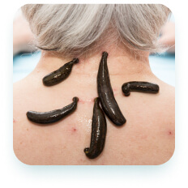

Tabiiy davolash usullari yordamida kasalliklardan xalos bo’ling.
Hijoma, manual terapiya, zuluk va turli tabiiy giyohlar eng ko’p uchraydigan kasalliklarni yengishda yordam beradi. Sog’ligingizni o’z ishining professionallariga ishonib topshiring.
Qabulga yozilish
Xizmatlar
-
Manual terapiya
Girudoterapiya (lot. hirūdō — «zuluk» va qad. yun. θεραπεία — «davolash») — ma’lum kasalliklarni dorivor zuluklar (Hirudo medicinalis) yordamida davolash usuli. Fizioterapevtik muolaja, muqobil tibbiyotga oid sanaladi. Bunday zuluklar ushbu kichik sinf chuvchalchanglariga oid yagona tur hisoblanadi, qolganlari shifobaxsh ta’sir ko’rsatmaydi.
-
Manual terapiya
Girudoterapiya (lot. hirūdō — «zuluk» va qad. yun. θεραπεία — «davolash») — ma’lum kasalliklarni dorivor zuluklar (Hirudo medicinalis) yordamida davolash usuli. Fizioterapevtik muolaja, muqobil tibbiyotga oid sanaladi. Bunday zuluklar ushbu kichik sinf chuvchalchanglariga oid yagona tur hisoblanadi, qolganlari shifobaxsh ta’sir ko’rsatmaydi.
-

Zuluk bilan davolash
Girudoterapiya (lot. hirūdō — «zuluk» va qad. yun. θεραπεία — «davolash») — ma’lum kasalliklarni dorivor zuluklar (Hirudo medicinalis) yordamida davolash usuli. Fizioterapevtik muolaja, muqobil tibbiyotga oid sanaladi. Bunday zuluklar ushbu kichik sinf chuvchalchanglariga oid yagona tur hisoblanadi, qolganlari shifobaxsh ta’sir ko’rsatmaydi.
-
Tabiiy dori vositalari
Girudoterapiya (lot. hirūdō — «zuluk» va qad. yun. θεραπεία — «davolash») — ma’lum kasalliklarni dorivor zuluklar (Hirudo medicinalis) yordamida davolash usuli. Fizioterapevtik muolaja, muqobil tibbiyotga oid sanaladi. Bunday zuluklar ushbu kichik sinf chuvchalchanglariga oid yagona tur hisoblanadi, qolganlari shifobaxsh ta’sir ko’rsatmaydi.